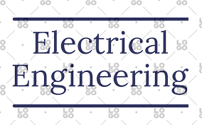
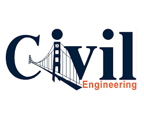

Mechanical engineering is one of the broadest engineering disciplines. Mechanical engineers design, develop, build, and test. They deal with anything that moves, from components to machines to the human body.
Electrical engineers design, develop, test and manage the manufacturing of electrical equipment, from electric motors and navigation systems to power generation equipment and the electrical components of vehicles and personal devices.
 Civil engineering is the design and construction of public works, such as dams, bridges and other large infrastructure projects. It is one of the oldest branches of engineering, dating back to when people first started living in permanent settlements and began shaping their environments to suit their needs.
Electronics and communication engineering (ECE) is a discipline of engineering that involves developing and testing electronic circuits and communication devices like transmitters, receivers and integrated circuits.

Computational Science and Engineering (CSE) is a discipline devoted to the study and advancement of computational methods and data analysis techniques to analyze and understand natural and engineered systems.